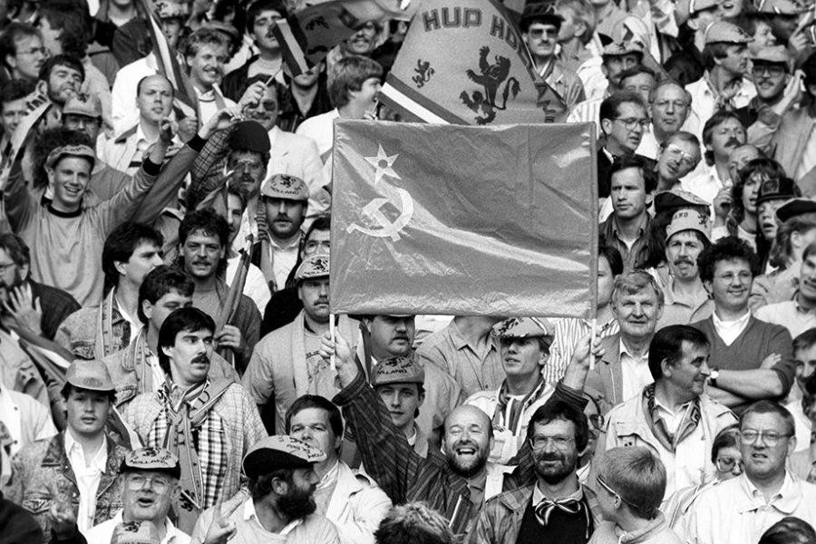
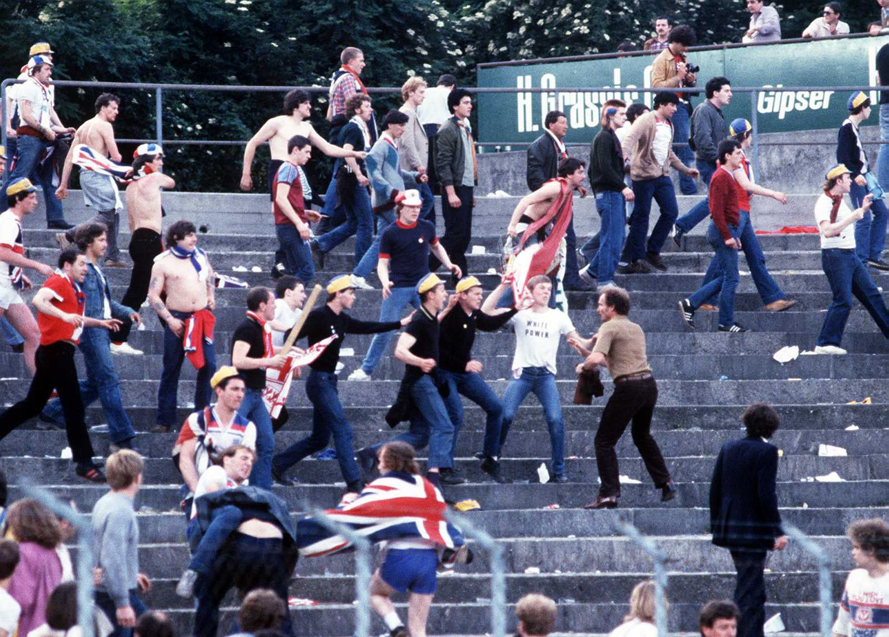
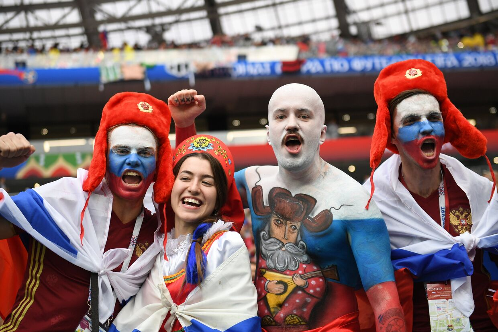

С экранов телевизора часто приходится слышать об очередных футбольных разборках, а встречать в метро разрисованных болельщиков в день проведения матча — еще чаще. Однако немногие знают, насколько сложна и разнообразна эта субкультура, имеющая за своими плечами полувековую историю.
Еще с 30-х годов сложилась традиция поддержки любимых команд, а по мере возрастания популярности футбола установилась практика организованных выездов фанатов в другие города. В 1970-х «Спартаковцы» стали первыми, кто начал посещать гостевые игры своего клуба, и чуть позже к ним присоединились поклонники других московских команд, а также ленинградского «Зенита». К новому течению КГБ отнесся крайне негативно и охарактеризовал как «антисоветское». Люди исключались из вузов и теряли работу, но все равно выезжали на матчи ради поддержки команды.
С воцарением «перестройки» и футбольные фанаты получили больше свободы. Течение стало массовым, а взгляды устремились в сторону Англии. Именно благодаря влиянию английских фанатов на стадионах появились песни, речевки и сленг. Оттуда пришла и хулиганская ментальность так называемого «околофутбола».
В середине 60-х трибуны английских стадионов на 70% состояли из «фанатов» футбольного насилия. Чуть ли не каждый матч заканчивался серьезными потасовками, а желание «выяснить сильнейшего» было главным мотивом для выезда в другой город. СМИ стали средством общественной огласки и саморекламы: некоторые болельщики даже коллекционировали газетные вырезки о своих «подвигах».
Распространению движения помешала Эйзельская трагедия: в 1985 году на финальном матче Кубка Европейских Чемпионов между итальянским «Ювентусом» и английским «Ливерпулем» из-за обрушения стены погибло почти 40 человек, а сотни были ранены. Тогда УЕФА отстранила на пять лет все английские клубы от участия в еврокубках, и, как следствие, множество хулиганских группировок прекратило свое существование. Сейчас основным принципом любого английского фаната является незаметность и отсутствие клубных цветов в одежде. Пересечения враждующих группировок происходят вдали от стадионов, а проводимые акции планируются неделями и тщательно просчитываются.
Эйзельская трагедия никак не затронула советских болельщиков, но распад СССР привел к развалу всей прежней инфракструктуры футбольной лиги. Тишина на стадионах продолжалась до середины 90-х и могла затянуться, если бы ни фанаты ЦСКА и «Спартака». Именно у них появились первые хулиганские группировки европейского масштаба. Так начал возрождаться интерес к фан-культуре у российских болельщиков. К чемпионату 1994 года у каждого клуба появились свои банды, однако столкновения между ними были нерегулярными и быстротечными.
В настоящее время российский «околофутбол» схож с английским и носит тот же ярко выраженный характер направления «Кэжуалс». Однако в российской среде доминируют идеи русского национализма, что в Англии еще в 70-80-х отошло на второй план.
Первое, что стоит понимать — не все любители футбола автоматически становятся частью субкультуры. Для того, чтобы стать фанатом, нужно активно посещать как домашние, так и гостевые матчи, и, кроме того, знать и принимать субкультуру футбольных фанатов.
Фан-движение традиционно состоит из нескольких организованных фан-групп и большого числа неорганизованных фанатов. Фан-группы, в свою очередь, состоят из 10-40 человек, подчиняющихся негласному уставу и имеющих определенные обязанности.
Фанатов можно условно разделить на несколько категорий:
Это, как правило, мужчины средних лет (есть и старше), посещающие центральные трибуны (не фан-сектор) ради того, чтоб встретиться с такими же друзьями, пощёлкать семечки и, поплёвывая шелухой, обсудить тактику на игру и возможную смену нынешнего тренера команды на более удачливого и опытного.
Такие на стадион не ходят, предпочитая смотреть игру по телевизору/Интернету в домашних тапках. Возможно, они даже не в курсе собственного прозвища.
Не самым почётным звеном фанатского сословия являются «карланы». Если кому и обязаны стереотипным описанием фаната, принятым в современном обществе, так это им. «Карланы» — это самые потенциально опасные фанаты. Ходят в спортивных костюмах, старых кроссовках, и чаще всего в нетрезвом виде.
Это собственно активисты футбольного мира. Они тщательно готовятся к матчам, рисуют баннеры и репетируют, однако фирменные клубные вещи практически не носят. С собой часто приносят «фаейры» (зажигательные шашки), но в людей их не бросают. «Ультрас» всегда поддерживают команду, независимо от исхода поединка, посещают все игры своего клуба, отстаивают клубные цвета и не имеют права садиться во время матча.
считаются элитой футбольного движения. Это те люди, которые дерутся между собой на роликах Youtub’а. Они выбирают удаленные от стадионов места и не нападают на неподготовленных людей. Именно они и являются представителями сегодняшнего «околофутбола». Состав серьезной «фирмы» (футбольной сленг) насчитывает 40-50 человек.

В среде фанатов есть свои симпатии и антипатии. Например, фанаты ЦСКА и Динамо вполне лояльны по отношении друг к другу. В 90-х существовала мода на фанатские шарфы, объединяющие поклонников этих команд (один конец — красно-синий, а другой —бело-голубой). А вот враг у них всегда был общим: спартаковцы, которые в свою очередь объединялись с торпедовцами.
В МВД и ФСБ есть специальные сотрудники, занимающиеся организованными болельщиками. Считается, что группировки становятся все более агрессивными и политизированными. Согласно классификации правоохранительных органов, футбольные фанаты стоят первыми в списке опасных молодежных группировок.
Мир футбольного фанатизма является уникальным и захватывающим, объединяющим миллионы людей по всему миру. Фанаты футбола проявляют страсть, преданность и эмоциональную связь со своей командой, что делает игру еще более захватывающей. Однако иногда футбольный фанатизм может принимать экстремальные формы, ведущие к насилию, расизму и другим негативным проявлениям. Важно помнить, что футбол должен оставаться спортивным и развлекательным событием, которое способно объединять людей, а не разделять их.